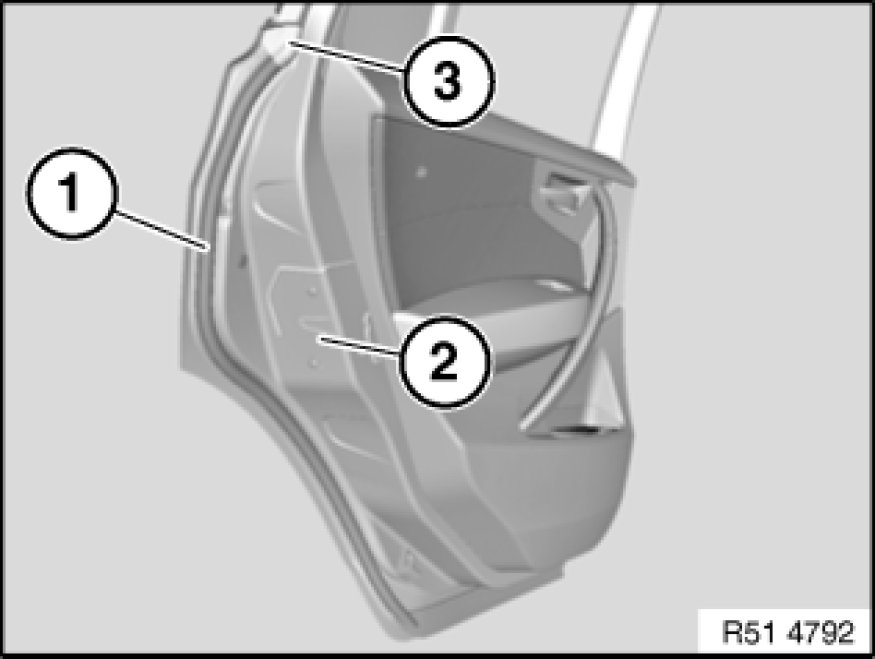

Removing and Installing/Replacing Seal on Rear Door, Left or Right
51 71 200 - Removing and installing / replacing seal on rear door, left or right

Note:
Follow repair instructions 54 0 ... Repair Instructions For Bonded Seals for bonded seals.

Detach seal (1) from rear door (2).
Clean adhesive area.
Installation:
- Pull protective film (liner) off seal to half-way point
- Feed seal at top into rubber guide (3)
- Gently press seal without stretching
- Check positioning of seal, correct if necessary and firmly press.
- Pull remaining protective film (liner) off seal.
- Press remaining seal without stretching.
- Check positioning of seal, correct if necessary and firmly press.

Important!
- Do not grip bonding surface.
- It is not the length of pressing in time but rather the level of pressing (approx. 10 ... 15 N/cm2) which is decisive here.
- Separation of seal after pressing destroys the adhesive layer.
Note:
After being pressed on gently, seal can be pulled off again up to 3 times. Do not dirty adhesive area.